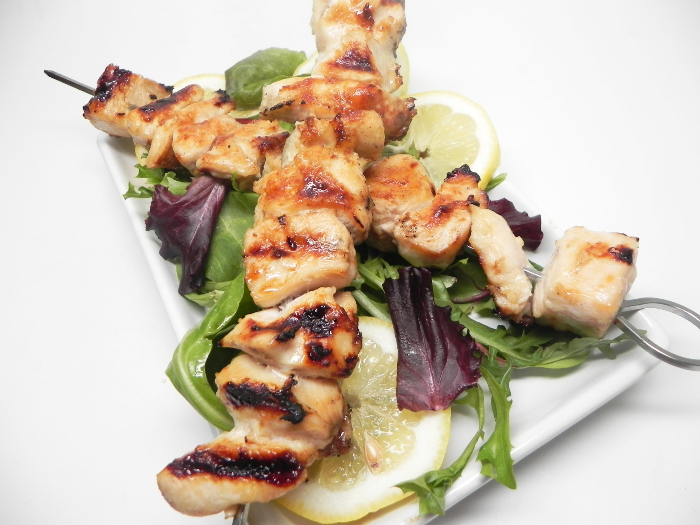

Lemon Garlic Chicken Kebabs

Lemon Garlic Chicken Kebabs
"Gorgeous sticky, garlicky chicken kebabs perfect for the barbecue!" says
recipe creator primrosey. Chicken breasts are marinated in butter, garlic,
and lemon juice for an easy, succulent grilled dish.
Ingredients
¼ cup butter, melted
1 lemon, juiced and zested
1 tablespoon brown sugar
1 clove clove garlic, minced or pressed
4 boneless chicken breasts, cubed
4 skewers, or as needed
Steps
-
Combine butter, lemon juice, lemon zest, brown sugar, and garlic in a
bowl. Add chicken and marinate for at least 1 hour.
- Preheat grill for high heat.
-
Remove chicken from the marinade and shake off excess. Thread onto
skewers.
-
Lightly oil the grill grate. Arrange skewers on the prepared grill. Cook
15 to 20 minutes, turning occasionally, until chicken juices run clear.
Back to Main